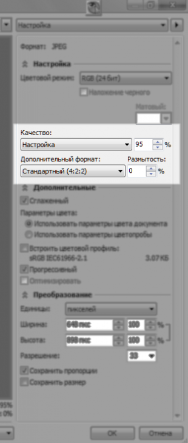
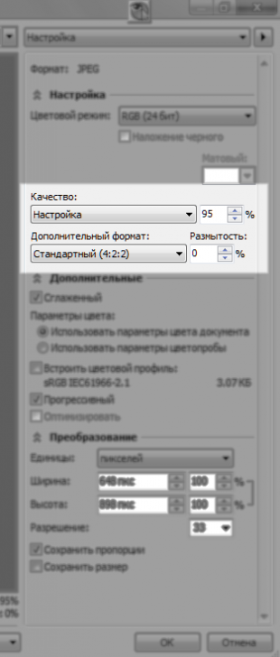

как экспортировать cdr файл в jpg так, чтобы он не терял свой размер?
Monya / 19.08.2014, 18:17
размер чего?
Умида / 19.08.2014, 19:58
файла естественно
chally / 20.08.2014, 02:10
Смеёмся молча...утирая скупую слезу....
karpenator / 20.08.2014, 10:29
В настройках экспорта в JPG где «Преобразование» по ширине и высоте должно быть 100%. Ну, соответственно должна стоять галка «Сохранять пропорции». Хотя непонятно, чем вы в данном случае определяете размер. Размер страницы? Размер предполагаемого прямоугольника, в который вписываются все объекты? Или что там еще...
ildar_1988 / 22.08.2014, 20:46
Возможно, имелся в виду случай CDR-файла с единственным объектом — растром. (Наша дизайнер-приёмщица отправляла файлы в печать в тако виде. Из каких соображений неведомо.) Тогда можно нажать на кнопку «Редактировать растровое изображение» на панели инструментов. Откроется Corel PhotoPaint с этой картинкой. Меню Файл>Экспорт. Выбрать формат JPEG для экспорта. В окне настроек можно ничего не менять, кроме настроек качества (поставить там 100% и 0%, чтобы не добавить искажений при экспорте). 
размер чего?
файла естественно
Смеёмся молча...утирая скупую слезу....
В настройках экспорта в JPG где «Преобразование» по ширине и высоте должно быть 100%. Ну, соответственно должна стоять галка «Сохранять пропорции». Хотя непонятно, чем вы в данном случае определяете размер. Размер страницы? Размер предполагаемого прямоугольника, в который вписываются все объекты? Или что там еще...
Возможно, имелся в виду случай CDR-файла с единственным объектом — растром. (Наша дизайнер-приёмщица отправляла файлы в печать в тако виде. Из каких соображений неведомо.) Тогда можно нажать на кнопку «Редактировать растровое изображение» на панели инструментов. Откроется Corel PhotoPaint с этой картинкой. Меню Файл>Экспорт. Выбрать формат JPEG для экспорта. В окне настроек можно ничего не менять, кроме настроек качества (поставить там 100% и 0%, чтобы не добавить искажений при экспорте).
